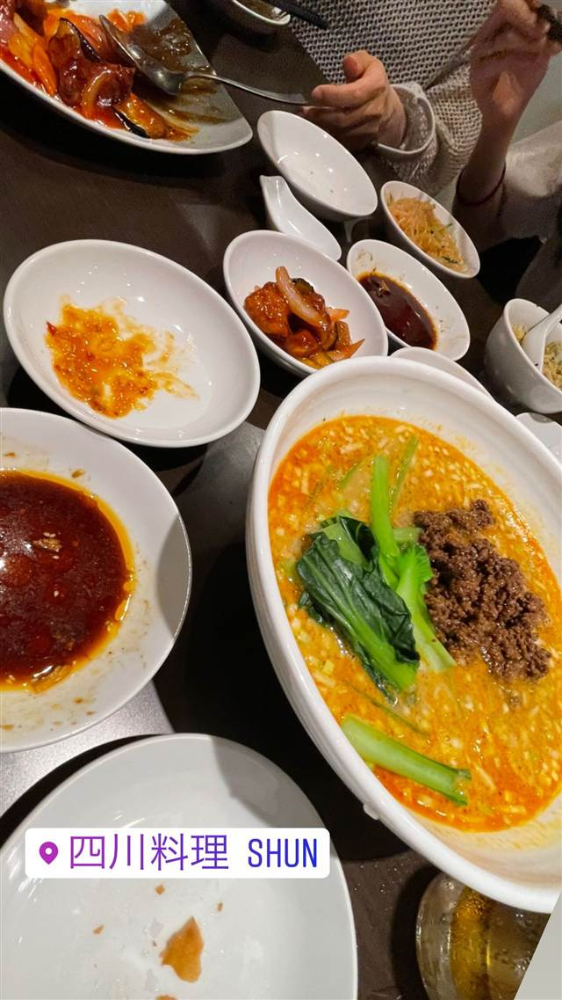

中華 · 四川・辛い · 千駄ヶ谷
鉄板中華 青山シャンウェイ 本店
上海で見た鉄板調理から生まれた孤独のグルメ登場店
青山シャンウェイ本店 千駄ヶ谷
WHY GO
中華鍋を使わず鉄板で焼く独自の調理法を考案した発祥店
店主の佐々木孝昌さんが、上海の街角で中華鍋ではなく鉄板を使って調理する料理人を見かけたことにヒントを得て生み出した「鉄板中華」の専門店。広尾や青山などで経験を積んだ後に独立して開業し、テレビ番組『孤独のグルメ』にも登場した人気店。
TRIVIA
豆知識
- 中華料理なのに中華鍋を使わず鉄板で調理するのが最大の特徴
- 着想のきっかけは約25年前に訪れた上海の街角で鉄板調理する料理人を見たこと
- 『孤独のグルメ』に登場した名店
REVIEWS
世間の評判
3.53食べログ
裏メニュー豊富な蒸し鶏の人気
- 骨までホロホロに柔らかい蒸し鶏の味付けを評価する声が多く見られる
- 店員が裏メニューを親身に教えてくれる点を評価する声が多く見られる
- 量が多く、満席になりやすいため予約が取りづらいという声が多い
Retty 口コミ569件
| 系譜 | 店主の佐々木孝昌氏が広尾アンテシノワーズ、青山、サバス東京、コパ東京、龍井茶楼などで経験を積んだ後に独立して開業 |
|---|---|
| 看板 | 鉄板を使った創作中華料理 |
| こだわり | 中華鍋ではなく鉄板で炒める独自の調理法。約25年前に上海の街角で鉄板調理する料理人を見かけたのがヒント |
| 掲載・評価 | テレビ番組『孤独のグルメ』に登場 |
| どこから | 都心 |
| 予算 | 昼 ¥1,000～¥1,999 夜 ¥5,000～¥5,999 |
| 場所 | 北参道駅 東京都渋谷区千駄ヶ谷4-29-12 北参道ダイヤモンドパレス1F |
食べたもの：中華料理
NEARBY
近い店・同じ系統の店
-

四川・辛い たまプラーザ 四川料理 シュン（SHUN） 毎年四川省へ香辛料を買い付ける店主の陳麻婆豆腐 昼 ¥1,000～¥1,999 夜 ¥6,000～¥7,999 -
 四川・辛い 赤坂見附
同源楼
花椒など3種の香辛料を使い分けるよだれ鶏と麻婆豆腐
昼 ～¥999 夜 ¥5,000～¥5,999
四川・辛い 赤坂見附
同源楼
花椒など3種の香辛料を使い分けるよだれ鶏と麻婆豆腐
昼 ～¥999 夜 ¥5,000～¥5,999
-
 四川・辛い 明治神宮前駅
SHIBIRE NOODLES 蝋燭屋 表参道ヒルズ店
辛さと痺れを別々に選べる麻婆麺と汁なし担々麺
昼 ¥1,000～¥1,999 夜 ¥1,000～¥1,999
四川・辛い 明治神宮前駅
SHIBIRE NOODLES 蝋燭屋 表参道ヒルズ店
辛さと痺れを別々に選べる麻婆麺と汁なし担々麺
昼 ¥1,000～¥1,999 夜 ¥1,000～¥1,999
-
 四川・辛い 赤坂
四川雅園
「同源楼」の姉妹店で味わう本格四川のしびれる麻婆豆腐
昼 ～¥999 夜 ¥3,000～¥3,999
四川・辛い 赤坂
四川雅園
「同源楼」の姉妹店で味わう本格四川のしびれる麻婆豆腐
昼 ～¥999 夜 ¥3,000～¥3,999
-
 四川・辛い 狛江駅（南口徒歩8分）
四川 郷土菜 シャンバァロウ（郷巴佬）
ミシュラン店出身の店主が作る四川の家庭料理・麻婆豆腐
夜 ¥3,000～¥3,999
四川・辛い 狛江駅（南口徒歩8分）
四川 郷土菜 シャンバァロウ（郷巴佬）
ミシュラン店出身の店主が作る四川の家庭料理・麻婆豆腐
夜 ¥3,000～¥3,999
-
 四川・辛い 生田
中華四川料理 飛鳥
陳建民から店名使用を許された最初の店とされる病院敷地内の四川料理店
昼 ¥1,000～¥1,999 夜 ¥1,000～¥1,999
四川・辛い 生田
中華四川料理 飛鳥
陳建民から店名使用を許された最初の店とされる病院敷地内の四川料理店
昼 ¥1,000～¥1,999 夜 ¥1,000～¥1,999